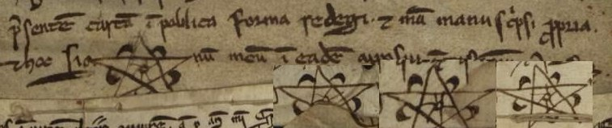

Sinal de Estevão Pelágio, prior do Mosteiro de Roriz (século XIII). "Hoc signum meum", "manu propria". O sol e a lua. As cinco chagas de Cristo.
O sinal aparece em vários documentos (vg. PT/TT/MSPR/M001/26, PT/TT/MSPR/M001/14).
Arquivo Digital de Investigação em Numismática Medieval Portuguesa

Sinal de Estevão Pelágio, prior do Mosteiro de Roriz (século XIII). "Hoc signum meum", "manu propria". O sol e a lua. As cinco chagas de Cristo.
O sinal aparece em vários documentos (vg. PT/TT/MSPR/M001/26, PT/TT/MSPR/M001/14).